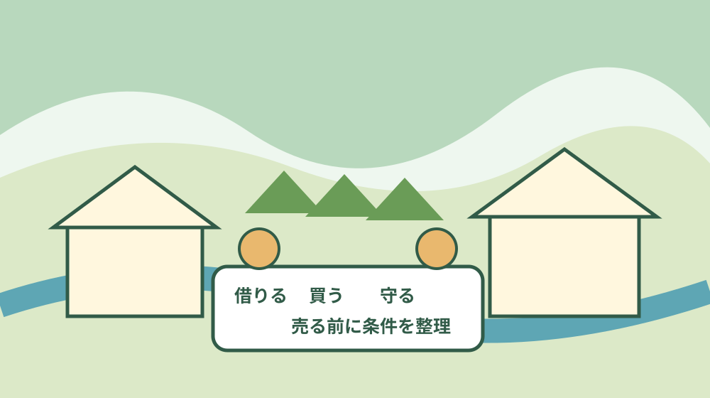
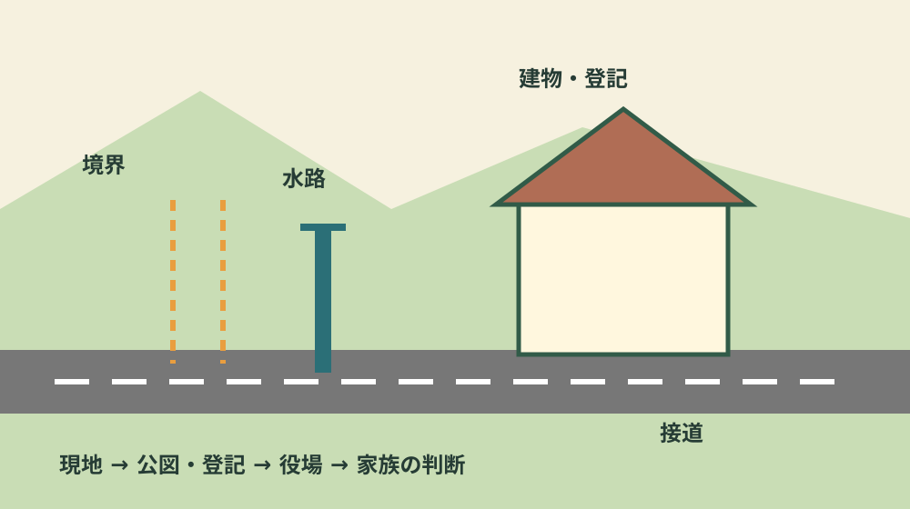
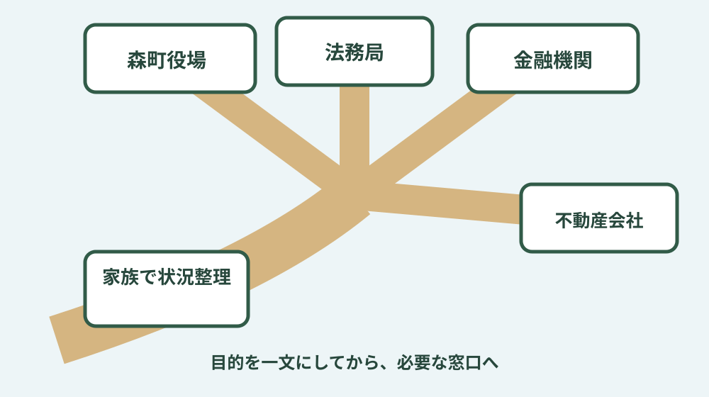

森町の不動産完全ガイド｜家・土地・売却・相談
森町で住まいを考えるとき、最初に見るべきものは物件価格だけではありません。借りる、買う、建てる、親の家を引き継ぐ、空き家を貸す・売るという目的を分け、地区の生活動線、道路、境界、地目、上下水道、防災、税、名義を順番に確認することが大切です。このページは、まだ契約や売却を決めていない人が、判断材料を一枚ずつそろえるための入口です。
1. 森町の不動産は「目的」と「土地条件」を分けて調べる
同じ「森町の不動産」という言葉でも、検索している人の状況は異なります。転勤や進学をきっかけに賃貸を探す人、家族で移住して土地や中古住宅を探す人、親が住まなくなった実家を引き継いだ人、空き家の管理負担を減らしたい人では、必要な情報も相談先も変わります。まず紙に「誰が、いつから、何年くらい、どの地区で、何のために使うか」を書くと、情報の混線を防げます。
森町は町の中央部と山間部で、駅や幹線道路への出やすさ、買い物、通院、除草や建物管理の負担が同じではありません。「森町だから車が必要」「自然が多いから静か」と一文で決めず、候補住所から勤務先、学校、病院、日常の買い物先まで実際の時間帯に移動して確かめます。雨の日、夕方、祭典や観光で交通量が変わる日も、暮らしの一部です。
土地や建物は、見た目と法的な状態が一致するとは限りません。道路のように使われていても接道の扱いを確認する必要があり、畑に見えなくても登記や農地台帳では農地の場合があります。塀や植栽が境界に見えても、隣地との合意や測量成果と一致するとは限りません。広告を見た段階、現地を見た段階、公的資料を取った段階を分け、分からない点を残したまま契約日だけ先に決めないことが基本です。
費用も、購入価格や家賃だけでは比較できません。固定資産税、仲介や登記、保険、修繕、通勤交通費、庭木や斜面の管理、浄化槽や給排水設備の維持など、住み続ける間の負担を年単位で見ます。空き家を所有する場合は、利用していなくても点検や換気、除草、郵便物、災害後の確認が必要です。遠方所有なら、現地へ行く回数と代行を頼む範囲も費用になります。

2. 借りる・買う・建てる・守る・売るの入口
賃貸を探す人は、民間賃貸、町営住宅、空き家バンクに掲載される賃貸の違いから確認します。町営住宅には収入などの要件と募集時期があり、希望した時点で必ず空室があるとは限りません。空き家バンクは物件情報の制度であり、町が賃貸借契約の相手や仲介者になるものではありません。詳しい分岐は森町で賃貸を探すガイドと町営住宅の確認手順で整理しています。
家を買う人は、新築か中古かだけでなく、土地と建物を一体で確認します。中古住宅では雨漏り、床下、基礎、給排水、増改築の履歴、残置物を見ます。土地では接道、境界、地目、上下水道、排水先、高低差、擁壁、災害リスクを見ます。空き家バンクの物件も、掲載されたことで建物状態や法的条件が保証されるわけではありません。家を買う前の確認から、必要な調査を抜き出してください。
家を建てる人は、建築費の前に土地へ建物を建てられるかを確認します。都市計画、建築基準上の道路、農地、造成、高低差、水道引込み、排水、工事車両の進入などは土地ごとに異なります。森町公式の都市計画資料は入口になりますが、個別の敷地判断は図面と所在地を持って所管窓口や専門家へ確認します。家を建てる前の制度と耐震も併読します。
親の家や空き家を守る人は、まず鍵、電気、水道、火災保険、郵便、家財、庭木、近隣連絡先を一覧にします。名義人が亡くなっている場合は相続関係と登記を別に進めます。今日すぐに売ると決められなくても、家の状態と毎月・毎年の支出を記録すれば、家族会議で感情と事実を分けられます。実家じまいの確認順序は、売却未定の段階から使えます。
売る人は、価格の話へ入る前に所有者、共有者、境界、残置物、賃貸借、農地、抵当権、建物の不具合を整理します。空き家バンクを使う方法と宅地建物取引業者へ依頼する方法は併存しますが、町の役割と民間事業者の役割は別です。売却全体は家を売る前のガイド、制度は空き家バンクのガイドで確認できます。
3. 地区と生活動線は、住所候補から実際に確かめる
森地区は役場や生活施設への動線を組みやすい一方、一つの地区内でも道路幅や河川との位置関係は同じではありません。一宮地区は天竜浜名湖鉄道や小國神社周辺への関心が高い地域ですが、観光で訪れた日の印象だけで生活を決めず、通勤時間帯と夜間の移動を見ます。飯田、園田、天方、三倉も、地区名だけで利便性や災害リスクを一括りにできません。
候補地では、平日の朝に勤務先へ向かい、夕方に買い物をして帰る経路を走ります。子どもがいる家庭は通学区域、集合場所、放課後の居場所を確認します。通院が必要な家族がいれば、公立森町病院だけでなく、受診する診療科や広域の医療機関までの経路を見ます。鉄道やバスを使う場合は、駅までの徒歩・自転車・送迎と、帰宅時刻に使える便を一続きで確認します。
スマートフォンの地図は距離を把握する入口ですが、道路の幅、見通し、冠水しやすい低地、急な勾配、夜間照明までは現地でなければ分からないことがあります。所有者や仲介者に任せきりにせず、気になった場所を写真とメモで記録します。私道や幅の狭い道は、車が通れるという事実と、建築や通行の権利関係を分けて確認します。
災害リスクは「色が付いているか」だけで終えません。森町の防災ハザードマップで洪水・土砂災害などを確認し、家から避難先までの道も歩きます。地図の境目付近や造成地、擁壁、沢や水路に近い敷地は、公表資料と現地の高低差を照合します。引っ越し前の災害リスク確認には、物件選びの順序をまとめています。

4. 道路・境界・地目・農地・名義を一枚の確認表にする
住まいを調べるときは、住所、地番、所有者、土地と建物の登記、固定資産税の通知、測量図や境界資料、建築関係書類を一か所に集めます。住所と地番は同じ表記とは限らないため、家族が「場所は分かる」と言うだけで進めません。複数筆の土地や未登記の建物、共有名義があると、確認相手と必要書類が増えます。
境界標が見つかっても、それだけで全ての境界が確定したとは限りません。古い塀、側溝、庭木の位置と資料が異なる場合があります。売買や建築で面積と範囲が重要になるときは、隣接所有者との確認や土地家屋調査士への相談が必要になることがあります。現地で分かったことと、専門家が確認したことを同じ欄に混ぜないようにします。
農地が含まれる物件では、宅地と同じ感覚で売買や用途変更を決められません。登記地目だけでなく農地としての扱いを担当窓口へ確認し、取得、転用、農振区域の確認を順番に行います。空き家に付く小さな畑でも、面積だけで自己判断しません。農地については森町の農地相談ガイドを入口にします。
相続した不動産は、町への税の届出と法務局での登記を混同しないことが重要です。納税通知書が届いている人と登記名義人が同じとは限らず、固定資産税を払っていることだけで名義変更が完了するわけではありません。戸籍収集、遺産分割、登記、税の論点は状況で変わるため、期限を確認して司法書士や税理士など適切な専門家へつなぎます。
確認表には「分かった」「資料待ち」「専門家へ質問」の三つの状態を付けます。すべてを自分で解決する必要はありませんが、誰に何を聞くかは所有者側で整理できます。道路なら所在地と写真、農地なら地番と利用目的、相続なら亡くなった人と相続人の関係、空き家なら利用停止時期と現在の管理状況を一文で説明できるようにします。
5. 費用は取得時・保有中・手放す時に分ける
借りる場合は、毎月の家賃のほか、初期費用、更新、駐車場、自治会、通勤交通費、設備の負担区分を確認します。物件数が少ない時期の掲載価格だけから「森町の家賃相場」を断定せず、同じ間取り、築年、駐車条件、地区で比べます。町営住宅は民間賃貸と募集条件が異なるため、金額だけで横並びにしません。
買う場合は、売買代金、仲介、登記、融資、保険、税、引っ越し、修繕を分けます。中古住宅では入居後すぐ必要な修繕と、数年内に予想される修繕を見積もります。安い物件でも、屋根、給排水、浄化槽、擁壁、進入路に大きな負担があれば、家計全体では高くなることがあります。見積書は工事範囲と含まれないものまで読みます。
保有中は固定資産税、保険、草木、清掃、設備点検、災害後確認を年額に直します。住んでいない家でも、基本料金や管理費が続く場合があります。遠方の実家なら、交通費と家族の時間も負担です。管理の記録は、将来貸す・売るときに、いつ何を確認したかを説明する材料にもなります。
手放す時は、家財処分、測量、登記、解体、仲介、税などの可能性があります。すべての物件で同じ費用がかかるわけではないため、所在地と現況を示して個別に見積もります。「売却代金で全部払える」と先に決めず、契約前に手元資金が必要になる項目を確認します。家族間で費用負担を決めたら、口頭だけでなく記録を残します。
費用表には、金額だけでなく「誰の見積りか」「いつまで有効か」「どの作業を含むか」を書きます。たとえば家財処分でも、家の中からの搬出、分別、運搬、家電、物置、庭の廃材が別料金になることがあります。測量は目的と範囲、修繕は仮設・撤去・廃材処分、仲介は媒介条件を確認します。比較する見積りの範囲が違えば、合計額だけを並べても判断できません。
家族で共有する資料には、支払済みの領収書、今後の見積り、毎年届く税・保険、点検記録を分けて保存します。誰か一人が立て替え続けると、後で負担の認識がずれることがあります。実家の場合は、現金の負担に加えて、訪問、草刈り、近隣連絡へ使った日も記録します。維持を続ける判断にも、貸す・売る判断にも、この記録が役立ちます。
6. 相談は「何を決めたいか」を一文にしてから
森町役場は、空き家バンク、移住、町営住宅、都市計画、農地、税、耐震など、制度ごとに確認する場所です。法務局は登記、金融機関は資金、不動産会社は物件紹介や媒介、司法書士は登記、土地家屋調査士は表示や境界、建築士は建物と計画というように役割が違います。一つの窓口だけで全てが確定するとは考えず、質問を分けます。
電話や相談の前に「森町の〇〇にある親名義の空き家を、当面管理するか売るか比べたい」「〇〇地区の土地に家を建てたいので、道路と農地の扱いを確認したい」のように目的を一文にします。地番、名義、現在の利用、分かっている資料、希望時期を添えると、次に必要な窓口が見えやすくなります。
査定額は判断材料の一つで、契約条件や手取り額そのものではありません。複数の提案を比べるときは、価格だけでなく根拠、売り出し方法、費用、期間、境界や残置物への対応、契約不適合に関する説明、担当者との連絡方法を確認します。高い数字が出たからすぐ依頼するのではなく、その数字がどの条件で成り立つかを聞きます。
このサイトを運営する富士ヶ丘サービス株式会社は民間事業者です。町役場や公的機関ではなく、相談利用は任意です。森町の制度利用に影響するものでもありません。民間相談を利用する場合は、対応範囲、費用が発生する時点、個人情報の扱い、媒介契約の有無を確認してください。まだ売ると決めていない場合は、そのことを最初に伝えて構いません。

7. 森町の不動産・住まいでよくある質問
森町の不動産は何から調べればよいですか
借りる、買う、建てる、相続した家を守る、売るのどれに近いかを決めます。その後、候補地の道路・境界・地目・上下水道・防災と、通勤通学の実動線を確認します。目的が二つあるなら、期限の早いものと将来の希望を分けて書きます。
空き家バンクと不動産会社はどう使い分けますか
空き家バンクは森町が物件情報を登録・公開する制度です。町は交渉、契約、物件管理を行いません。所有者と利用希望者で進めることが基本で、必要に応じて宅地建物取引業者へ仲介を依頼できます。依頼時は報酬や範囲を確認します。
土地を見るとき価格以外に何を確認しますか
接道、境界、地目、農地該当、都市計画、上下水道、排水、高低差、擁壁、洪水・土砂災害リスクを確認します。さらに、平日朝夕の通勤、学校、病院、買い物への動線を実際に試します。
相続した実家はすぐ売るべきですか
急いで売却だけに決める必要はありません。名義、共有者、家財、維持費、建物状態、家族の利用意向を記録し、使う・貸す・守る・売る・解体する選択肢を比較します。ただし相続登記など期限のある手続きは別に確認します。
森町の不動産相談は無料ですか
町の制度確認と民間事業者の相談は別です。民間サービスは相談後に媒介や調査などの費用が発生する場合があるため、無料の範囲、料金、契約を依頼前に確認します。本サイト運営会社の案内も任意利用です。
8. 今日できること・公式情報源
今日できるのは、目的を一文にし、候補住所または実家の地番、名義、利用状況、手元資料を一枚へ書くことです。次に、該当する公式ページを開き、確認した日を記録します。現地へ行けるなら道路、境界標、水路、建物外周、メーター、郵便受けを写真に残します。写真を撮る際は隣家や通行人のプライバシーへ配慮します。
関連する新しい確認ガイド
最終確認日：2026-08-09 ／ 制度・公開資料は更新されます。個別の土地・建物は公式窓口と専門家へ確認してください。